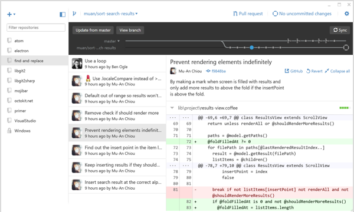
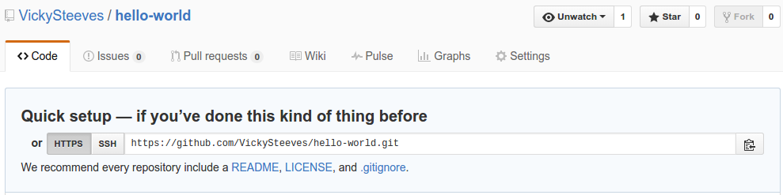

Introduction to Git & GitHub
Vicky Steeves | DATE

2nd Thing: Git != GitHub
Git is a revision control system, a tool to manage your source code history. It is strictly a command-line tool.
GitHub is a website where you can upload a copy of your Git repository. It offers all of the functionality of Git as well as adding its own features.
Why GitHub?
GitHub is an easy way to collaborate with others on shared git repositories. GitHub will host it for us, and we can then sync our local copies with changes made and pushed to the share one.
It's also kind of a standard now...
2 Ways to Use GitHub
There are 2 ways that you can interact with repositories hosted on GitHub: the command line, or if you have Mac OSX and Windows, you can use Desktop GitHub.
Creating a Central Repository
When you are logged into github.com, you should be able to see a + sign in the top right-hand corner.

Creating a Central Repository
Name your new repository hello-world, don't fill out anything else and hit "Create Repository":

Make a Local Copy
GitHub calls copying a central repository to your local computer cloning. When you make a new repository, it comes with these instructions:
We want to use that HTTPS: link to clone our repository; to make a local copy we can work on and edit. *don't do this yet*
cd Desktop # or wherever you want to put the repository
git clone LINK
Make a Local Copy
Now, everything in that repository has been put onto your desktop, in the folder with the same name as the repository (in this case, hello-world).
In our case, since we already have a git repository initialized, we want to add a remote origin -- this is telling git where your repository is stored (or going to be stored, in our case!).
git remote add origin LINK
Now, we have to PUSH all our newly added content to the remote origin.
Syncing Local Changes with the Central Repository
Now that we've added the link to our central repository to our local one, we have to push all our newly added content.
This adds 1 more step to what you already know how to to do:
cd repository-name # navigate to your repository
git add -A # shortcut to stage all your files
git commit -m "adding hi.txt and bye.txt"
git push origin master # send these changes to the central repo
Go refresh your browser to see your changes!
Collaborating on a Central Repository
Since the joy of GitHub comes from sharing, let's discover how to collaborate on here.
- You and the person to uour right are now partners. People on the ends, wrap around the right.
- Decide who is "A" and who is "B".
- You will be syncing changes ONLY to person A's repository. Don't do anything yet
- Put up the blue stickie note when you are all set!
First Tasks:
Person A: add person B as your collaborator on GitHub using their GitHub name or email address:

First Tasks:
Person B: clone person A's repository:
cd Desktop # or wherever you want to put the repository
git clone LINK
cd repository-name # go into your new repository
Syncing Your Partner's Changes
Person A:
- Make changes to hi.text
- Save your changes.
- Go through the steps to sync to the central repo in Slide 5
Person B:
- To get the changes your partner just made, you must pull the central repo!
- You do this through (from within the repository's folder!):
git pull origin master - Check out your new message!
Next, reverse the roles and try again!
Thank you! Questions?
Email me: vicky.steeves@nyu.edu
Learn more about RDM: guides.nyu.edu/data_management
Get this presentation: guides.nyu.edu/data_management/resources
Make an appointment: guides.nyu.edu/appointment